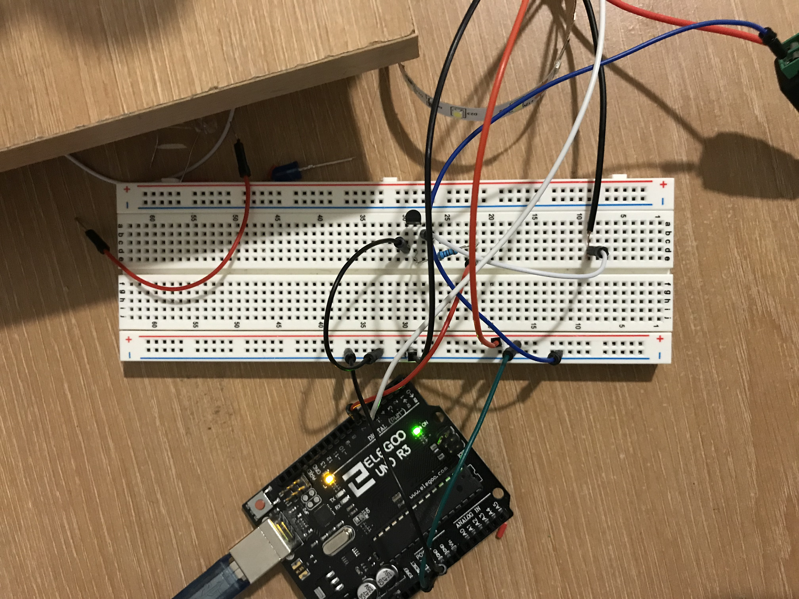

Jonathan Tran Assignment Final Project: A Lamp
For my final project I created a remote controlled lamp. I wanted to make this because I currently don't have a lamp in my room and there are times when using the regular is just too bright and hurts my eyes (especially when I'm laying in bed on my computer or laptop) and so I wanted to build a lamp for this scenario. The lamp itself is able to go through 6 different brightnesses and is controlled by the remote control using the IR sensor. My 3D print for the lamp turned out smaller than expect and so I was unable to fit the LED strip inside the way I orignally envisioned it, but I'm still considering other options such as mounting the LED strip along my wall, but if I'm going to really use it (which I hope to do), I'll need to use another power source other than my laptop and the 9v plug.
What the circuit looks like:

Here's my code:
#include
int LEDpin = 6;
boolean fadeMode = false;
const int RECV_PIN = 5;
boolean lightBlink = false;
int setBright = 0;
int brightness = 0;
IRrecv irrecv(RECV_PIN);
decode_results results;
unsigned long key_value = 0;
void setup(){
Serial.begin(9600);
pinMode(LEDpin, OUTPUT); // set the LED Strip as output
irrecv.enableIRIn();
}
void loop() {
if (irrecv.decode(&results)){
Serial.println(results.value);
if (results.value == 0XFFFFFFFF)
results.value = key_value;
switch(results.value){
case 0xFF30CF: //if we press button one, do this next stuff
Serial.println("1");
digitalWrite(LEDpin, LOW); // turn the LED on
break ;
case 0xFF18E7:
// setBright = 255;
Serial.println("2");
// setBright = 255;
//
// if (brightness < setBright) {
//
// for (int i = brightness; i < setBright; i++) {
// Serial.println(i);
// analogWrite(LEDpin, i);
// delay(10);
// }
// }
analogWrite(LEDpin, 255);
brightness = 255;
break ;
case 0xFF7A85:
setBright = 200;
Serial.println("3 - medium");
if (brightness < setBright) {
for (int i = brightness; i < setBright; i++)
analogWrite(LEDpin, i);
}
// analogWrite(LEDpin, 200);
brightness = 200;
break;
case 0xFF10EF:
Serial.println("4");
analogWrite(LEDpin, 100);
break ;
case 0xFF38C7:
Serial.println("5");
analogWrite(LEDpin, 50);
break ;
case 0xFF5AA5:
Serial.println("6");
analogWrite(LEDpin, 10);
break ;
case 0xFF42BD:
Serial.println("7");
setBright = 2;
// digitalWrite(LEDpin, 255);
//
analogWrite(LEDpin, 2);
brightness = 2;
break ;
case 0xFF4AB5: // Turn off blink mode
Serial.println("8"); // fade mode
fadeMode = true;
break ;
case 0xFF52AD: // Turn on blink mode
Serial.println("9");
break ;
}
key_value = results.value;
irrecv.resume();
}
// if (fadeMode = false) {
// analogWrite(LEDpin, brightness);
//
// // change the brightness for next time through the loop:
// brightness = brightness + fadeAmount;
//
// // reverse the direction of the fading at the ends of the fade:
// if (brightness <= 0 || brightness >= 255) {
// fadeAmount = -fadeAmount;
// }
// // wait for 30 milliseconds to see the dimming effect
// delay(30);
// }
}
Here's a gif of the lamp in action